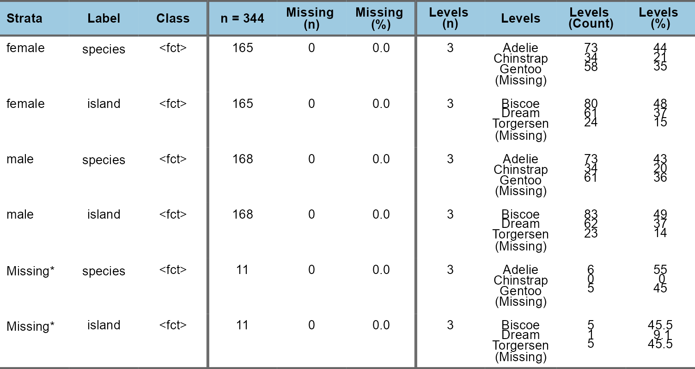
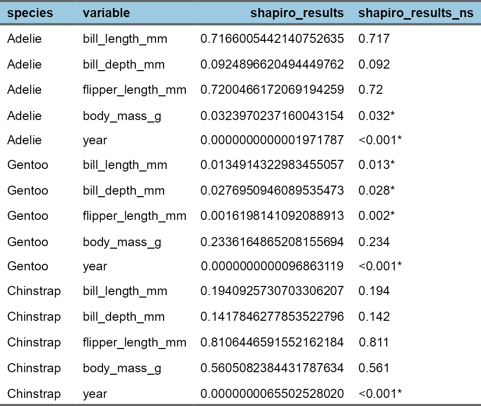
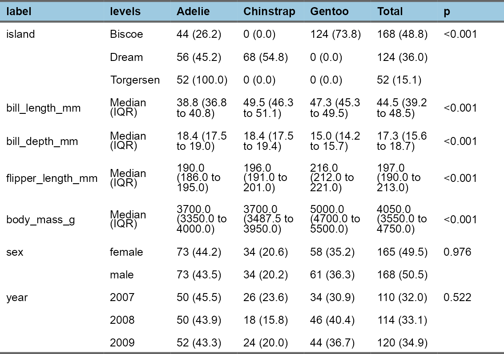
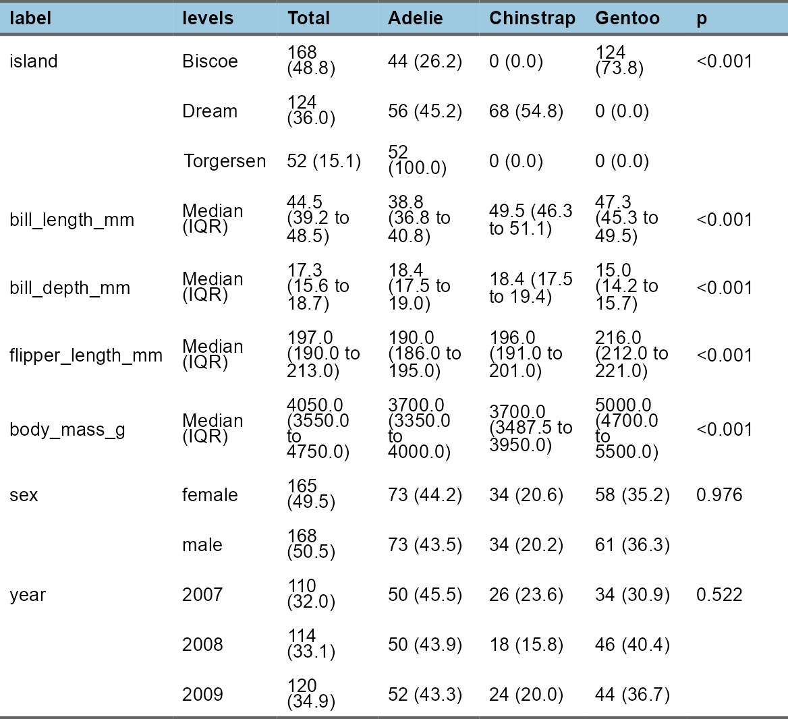
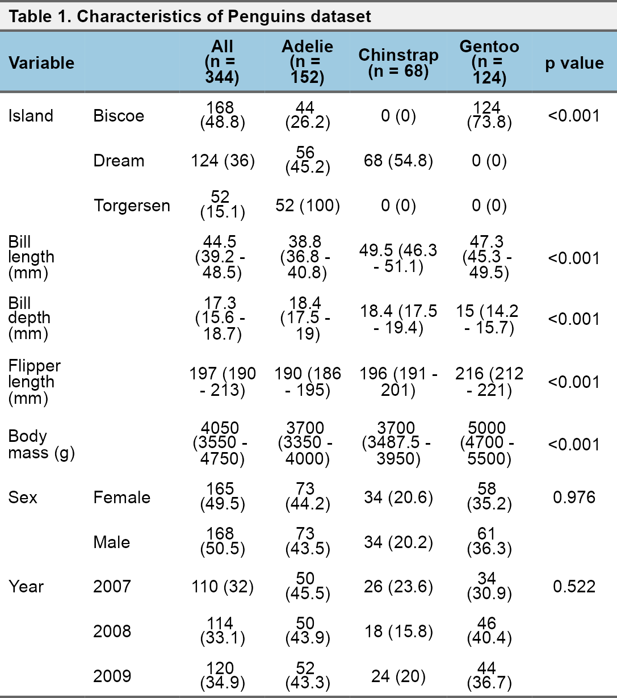
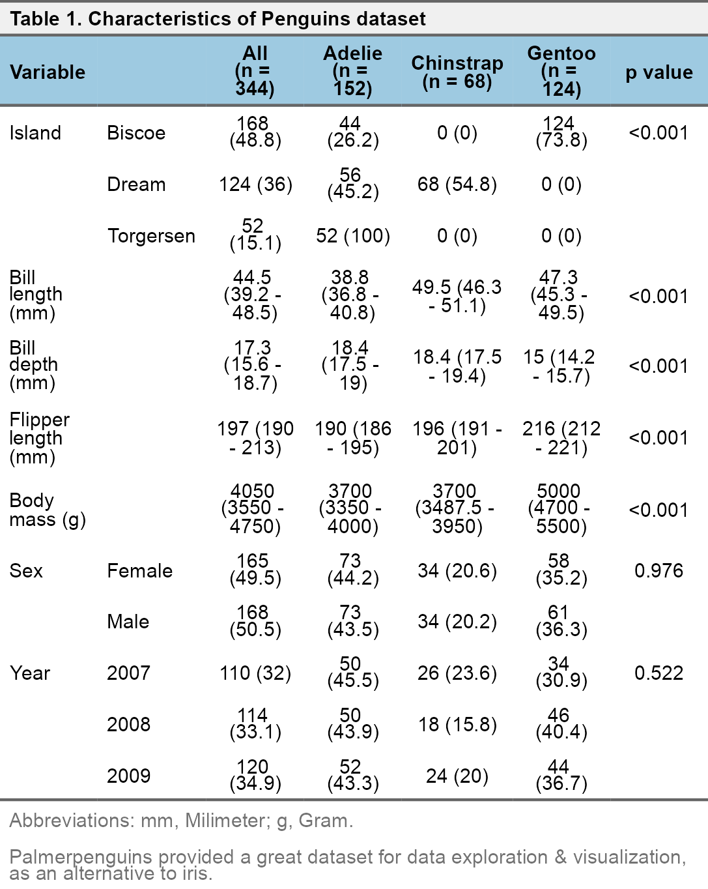
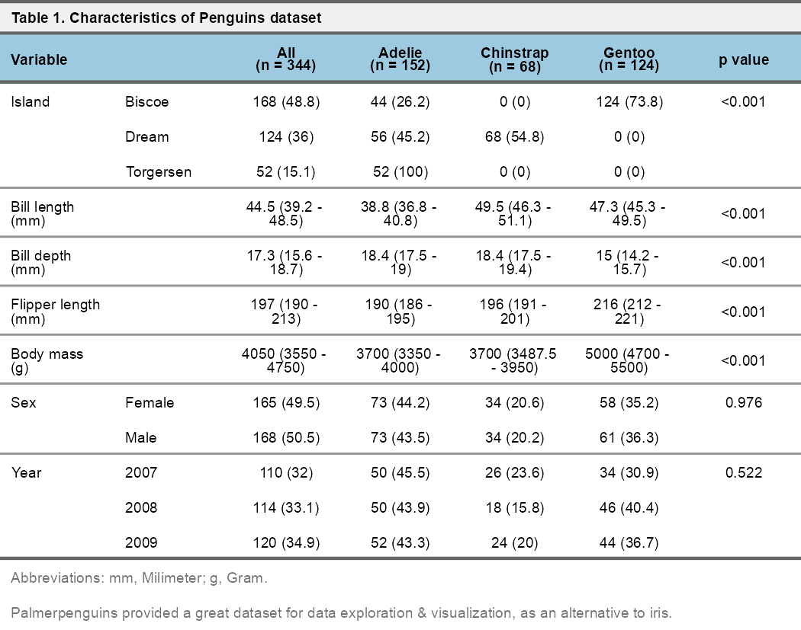

RforMD aims to provide some functions for personal use.
Surely, any academic in medicine, can use any.
I am open to improve. Do not hesitate for requests/issue reports.
Installation
You can install the development version of RforMD from GitHub with:
# install.packages("remotes")
remotes::install_github("AliGunerMD/RforMD")
library("RforMD")Example use
# remotes::install_github("AliGunerMD/RforMD", force = TRUE)
library(RforMD)
library(palmerpenguins)
library(tidyverse)
strata <- "species"
table_vars_penguins <- penguins %>%
select(-species) %>%
names()
# library(finalfit)
# library(flextable)The idea of this package comes from the personal needs.
The finalfit package is one of the most useful package for a researcher who works in medicine.
It provides great functionalities. I just want to improve some parts of them, so, try to extent it to save some time.
Later, I also added some functions for flextable with the same idea. to make faster and totally reproducible Word tables.
If you are happy with html output, try gt, gtsummary, gtExtras packages.
All analysis starts with the exploration of data.
Among many options like summary(), str(), dplyr::glimpse(), skimr::skim();
I prefer finalfit::ff_glimpse() with some modifications.
ag_ff_glimpse()


Categorical variables with strata
ag_ff_glimpse(penguins, type = "cat", strata = "sex", missing = TRUE) 
ag_shapiro()
ag_shapiro(penguins, strata = strata, table_vars = table_vars_penguins)
#> Shapiro-Wilk test results for normality within strata:
#> Checked variables: bill_length_mm, bill_depth_mm, flipper_length_mm, body_mass_g, year
#> Stratified by: species
#> Non-normally distributed variables: body_mass_g, year, bill_length_mm, bill_depth_mm, flipper_length_mm
#> [1] "body_mass_g" "year" "bill_length_mm"
#> [4] "bill_depth_mm" "flipper_length_mm"
ag_shapiro_results(penguins, strata = strata, table_vars = table_vars_penguins,
scientific = TRUE) %>%
ag_flex()

ag_ff_summary()
ag_ff_summary(penguins, strata = strata, table_vars = table_vars_penguins) %>%
ag_flex()
ag_ff_relocate()
ag_ff_summary(penguins, strata = strata, table_vars = table_vars_penguins) %>%
ag_ff_relocate(order = "TGP") %>%
ag_flex()
#> Relocated columns:label -- levels -- Total -- Adelie -- Chinstrap -- Gentoo -- p
ag_ff_columns()
ag_ff_summary(penguins, strata = strata, table_vars = table_vars_penguins) %>%
ag_ff_relocate(order = "TGP") %>%
ag_ff_columns(levels = TRUE) %>%
ag_flex()
#> Relocated columns:label -- levels -- Total -- Adelie -- Chinstrap -- Gentoo -- p
#> Manual check may be needed for some levels.
ag_ff_labels()
penguins_names <- c(
"island" = "Island",
"bill_length_mm" = "Bill length (mm)",
"bill_depth_mm" = "Bill depth (mm)",
"flipper_length_mm" = "Flipper length (mm)",
"body_mass_g" = "Body mass (g)",
"sex" = "Sex",
"year" = "Year"
)
ag_ff_summary(penguins, strata = strata, table_vars = table_vars_penguins) %>%
ag_ff_relocate(order = "TGP") %>%
ag_ff_columns(levels = TRUE) %>%
ag_ff_labels(use_vector = TRUE, vector_name = penguins_names) %>%
ag_flex()
#> Relocated columns:label -- levels -- Total -- Adelie -- Chinstrap -- Gentoo -- p
#> Manual check may be needed for some levels.
#> A vector for variable names was used to rename labels.
summary_flextable <- ag_ff_summary(penguins, strata = strata, table_vars = table_vars_penguins) %>%
ag_ff_relocate(order = "TGP") %>%
ag_ff_columns(levels = TRUE) %>%
ag_ff_labels(use_vector = TRUE, vector_name = penguins_names) %>%
ag_flex()
#> Relocated columns:label -- levels -- Total -- Adelie -- Chinstrap -- Gentoo -- p
#> Manual check may be needed for some levels.
#> A vector for variable names was used to rename labels.ag_flex_header_labels()
summary_flextable %>%
ag_flex_header_labels(.dataset = penguins, strata = "species")
#> Because custom = FALSE, original stratas will be used.
ag_flex_center()
summary_flextable %>%
ag_flex_header_labels(.dataset = penguins, strata = "species") %>%
ag_flex_center()
#> Because custom = FALSE, original stratas will be used.
ag_flex_title()
summary_flextable %>%
ag_flex_header_labels(.dataset = penguins, strata = "species") %>%
ag_flex_center() %>%
ag_flex_title(1, "Characteristics of Penguins dataset")
#> Because custom = FALSE, original stratas will be used.
ag_flex_abbr()
abbr_vector <- c(
"mm" = "Milimeter",
"g" = "Gram"
)
summary_flextable %>%
ag_flex_header_labels(.dataset = penguins, strata = "species") %>%
ag_flex_center() %>%
ag_flex_title(1, "Characteristics of Penguins dataset") %>%
ag_flex_abbr(abbr = abbr_vector)
#> Because custom = FALSE, original stratas will be used.
ag_flex_footnote()
my_random_foot <- "Palmerpenguins provided a great dataset for data exploration & visualization, as an alternative to iris."
summary_flextable %>%
ag_flex_header_labels(.dataset = penguins, strata = "species") %>%
ag_flex_center() %>%
ag_flex_title(1, "Characteristics of Penguins dataset") %>%
ag_flex_abbr(abbr = abbr_vector) %>%
ag_flex_footnote(my_random_foot)
#> Because custom = FALSE, original stratas will be used.
ag_flex_hline()
summary_flextable %>%
ag_flex_header_labels(.dataset = penguins, strata = "species") %>%
ag_flex_center() %>%
ag_flex_title(1, "Characteristics of Penguins dataset") %>%
ag_flex_abbr(abbr = abbr_vector) %>%
ag_flex_footnote(my_random_foot) %>%
ag_flex_hline()
#> Because custom = FALSE, original stratas will be used.Any flextable function can be added
summary_flextable %>%
ag_flex_header_labels(.dataset = penguins, strata = "species") %>%
ag_flex_center() %>%
ag_flex_title(1, "Characteristics of Penguins dataset") %>%
ag_flex_abbr(abbr = abbr_vector) %>%
ag_flex_footnote(my_random_foot) %>%
ag_flex_hline() %>%
flextable::fontsize(size = 7, part = "all")
#> Because custom = FALSE, original stratas will be used.